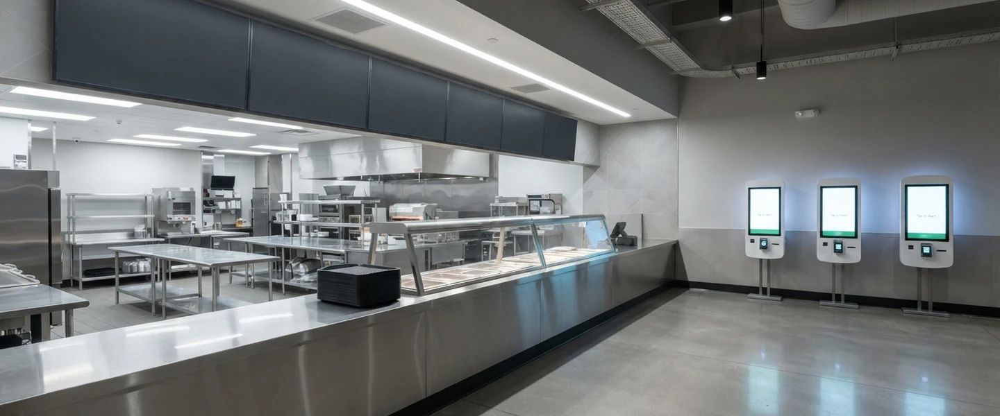
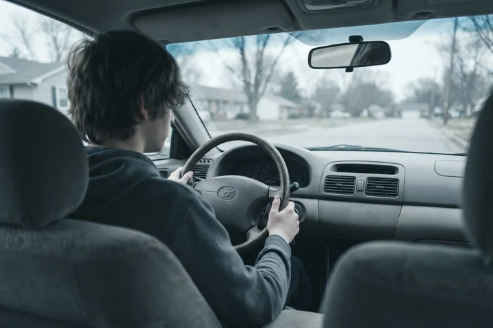

The Disappearing First Job
A category-by-category account of the automation of teen work in America.
The essay Are We Automating Away Our Children's Path to Satisfying Lives? makes a structural argument: that the systematic automation of household tasks and teen jobs has eliminated the recognized contribution opportunities through which children have always built identity, agency, and the motivation to face the unknown. What follows is not an argument. It is a ledger.
Before the ledger, one number from the U.S. Bureau of Labor Statistics: in July 2025, the youth unemployment rate for Americans aged 16 to 24 reached 10.8 percent — up from 9.8 percent in July 2024, and up from 8.7 percent in July 2023. Youth employment as a share of the population declined for the third consecutive year. BLS analysts noted: "It seems like the idea of working is fading for this age group, but the reasons why are not clear."
This document offers some clarity on the reasons.
Company by company, category by category, what follows is the current state of the market — the named companies, the funded technologies, the deployed robots, and the specific jobs they are replacing. Each one reasonable. Each one celebrated. None of them asking what the teenager loses when the task disappears.
Category 1: Fast Food
The job that employed more first-time workers than any other industry in American history
Company: Miso Robotics — Pasadena, California
Miso Robotics was founded with a single explicit mission: to automate "the dull, dirty and dangerous work around the grill, the fryer, and other prep work" in commercial kitchens. Their flagship product, Flippy, uses AI, thermal cameras, and computer vision to monitor and cook food without human involvement at the station. As of 2026, Flippy has surpassed five million baskets fried in live commercial deployments across seven U.S. states, operating at White Castle locations nationwide and inside its first NBA arena.
Miso is not stopping at the fryer. In February 2026 they acquired Zignyl, a restaurant operations software company — now rebranded as Zippy — an AI platform managing restaurant-wide operations, performance tracking, and employee incentives across every location. In June 2026 they acquired Zume Pizza's technology and intellectual property: a portfolio of over 300 patents covering robotic food preparation, delivery, sustainability, and packaging. Their robots can already stretch dough, add sauce, cheese and toppings, put it in the oven, and box it up. "Pizza makes so much common sense to automate," their CEO said, "and yet nobody's been able to crack it. We want to explore that."
They justify the replacement using the industry's own data: the fast food industry experiences an annual employee turnover rate of 144 percent. In their framing, that turnover is a problem to be solved by removing the human entirely. In the framing of the companion essay, that same 144 percent turnover rate was the feature — the revolving door that gave the next teenager their first job every time someone left.
The fast food counter employed more first-time American workers than perhaps any other institution in the last century. It is being automated away station by station.
Category 2: Retail Checkout
The bag boy, the cashier, the counter — replaced by sensors, cameras, and machine learning
Company: Amazon Just Walk Out Technology — Seattle, Washington
Amazon's Just Walk Out technology uses computer vision, deep learning algorithms, and sensor fusion to allow customers to purchase products without any cashier interaction. As of 2026, it is deployed in over 360 third-party locations across five countries, with 150 new locations added in 2025 alone — in stadiums, transportation hubs, convenience stores, and Amazon fulfillment center breakrooms. Amazon closed its own Amazon Go retail stores in early 2026, but the underlying technology is expanding faster than ever through licensing.
McDonald's has installed self-ordering kiosks across all 14,000-plus U.S. locations. A new "counterless" McDonald's format under testing in 2024 eliminates the traditional service counter entirely — no cashier, no counter, nowhere for a sixteen year old to start. California's $20 fast food minimum wage — enacted in 2024 — directly accelerated the timeline. Restaurant operators responded in their own words with "order kiosks, mobile apps, AI drive-through ordering systems, and other innovative assembly technologies deployed to reduce labor requirements."
Across the broader retail industry, up to 65 percent of cashier and checkout positions are projected to be automated. Between 6 and 7.5 million retail jobs face displacement risk. Full-time cashier employment has already fallen from 54 to 39 percent for women in recent decades. AI replacement risk score for the cashier role: 86 out of 100.
Category 3: Delivery
The newspaper route, the pizza run, the neighborhood errand — automated and deployed at scale
Company: Serve Robotics — San Francisco, California
Serve Robotics operates autonomous sidewalk delivery robots across Los Angeles, Atlanta, Dallas-Fort Worth, Miami, Chicago, Fort Lauderdale, and Alexandria, Virginia. By December 2025 they had deployed their 2,000th robot — the largest sidewalk delivery fleet in the United States — achieving their annual goal on time, on plan, and on budget. Their robots operate with Level 4 autonomy at a 99.8 percent completion rate. They partner with Uber Eats and DoorDash — the platforms that already replaced the teenage pizza delivery driver — and are now replacing the human delivery driver those platforms depended on.
Starship Technologies separately has completed over 9 million deliveries across 270-plus locations in seven countries with 2,700-plus robots, having raised more than $280 million. The global delivery robot market is currently valued at $800 million and projected to reach $3.24 billion by 2030 — a 32 percent annual growth rate.
What was once a teenager on a bicycle at six in the morning, or a sixteen year old in a car with a pizza bag, is now a fleet of autonomous robots navigating sidewalks at scale. Nobody hired a robot to deliver a push notification. They hired it to deliver everything else the teenager used to carry.
Category 4: Lawn Care
The Saturday morning knock on the door — now a subscription that arrives while the family sleeps
Company: Husqvarna Automower — Stockholm, Sweden
Husqvarna has been building autonomous lawn mowers since 1995. As of 2026, over 2 million Automower units operate worldwide across both residential and commercial applications. Robin Technologies — which appeared on Shark Tank and was backed by Husqvarna — pioneered the Robotics as a Service model for lawn care in North America: subscription-based autonomous mowing that requires no human operator, no teenager who knocked on the door, no cash transaction at the end. The robotic lawn mowing market is forecast to reach $1.25 billion by 2027.
The pitch, stated plainly by industry publications: "Who wouldn't rather spend their Sundays relaxing indoors instead of outdoors pushing a mower?"
The teenager who used to knock on that door on Saturday morning no longer has a reason to knock.
Category 5: Car Wash
The hand wash crew, the lot attendant, the wiper — gone before anyone noticed
Industry: Automated Car Wash
The hand-wash car wash — where teenagers scrubbed windows, dried hoods, and vacuumed interiors for tips and hourly pay — has been systematically replaced by automated tunnel systems and touchless technology. Operators using touchless car wash machines report 60 to 70 percent savings on staffing compared to manual operations. Automated systems process 60-plus vehicles per hour, operate 24 hours a day, and require minimal human presence. There are currently over 62,000 car wash businesses in the U.S. — the vast majority now fully automated. The shift toward subscription-based models is further eliminating the episodic, walk-up employment that teenagers could access without a resume or a reference.
Category 6: Movie Theaters
The ticket taker, the concession stand, the usher with the flashlight — eliminated by kiosks and streaming
Industry: U.S. Movie Theater Sector
The movie theater job was one of the most iconic teen employment destinations of the twentieth century. The ticket counter. The concession stand. The popcorn machine. The usher who checked your stub with a flashlight and pointed you to your row. These were not skilled positions — they were exactly what a first job is supposed to be. A place to show up. A uniform to put on. People to serve. A small paycheck at the end of the week. And for a generation of teenagers, a social world organized around the closing shift.
Two forces have dismantled it simultaneously. The first is automation: AMC, Regal, and every major chain has deployed self-service ticketing kiosks across their locations, eliminating the ticket counter that used to be a teenager's first public-facing job. Observers walking into AMC locations in 2024 and 2025 reported "empty counters, abandoned concession stands, swathes of empty space clearly designed to be operated by people, the monotony broken up by the occasional automated self-service kiosk." The human behind the counter has been replaced by a touchscreen.
The second force is streaming. Movie theater visits fell 10 percent in 2025. Ticket sales are down 23.5 percent from pre-pandemic levels. Over 5,700 screens have closed since the pandemic. Regal Cinemas, AMC, Alamo Drafthouse, CMX Cinemas, and Pacific Theatres have all filed for bankruptcy. Only 53 percent of U.S. adults saw a movie in a theater in 2025 — down from what was once a near-universal cultural habit.
Fewer theaters. Fewer seats. Fewer shifts. Fewer teenagers behind the counter. The movie theater job did not get automated in a dramatic moment. It got hollowed out from two directions at once — kiosks took the front end, streaming took the audience — and the teenager who used to stand behind that counter and hand someone their popcorn has nowhere left to stand.
Category 7: Childcare
The last remaining teen job category — and the one being built out fastest
Market: Babysitter Robot / AI Childcare
The babysitting job — one of the last significant teen employment categories still widely available — is being targeted by a market growing at nearly 16 percent per year. Japan and South Korea are already deploying robot helpers in childcare settings. China's BeanQ robot operates in millions of homes. AvatarMind's iPal robot can sing, dance, talk to children, and assist with homework. Current robot nanny systems monitor children's temperature, pulse, breathing, and movement in real time, alerting parents to any irregularities.
The pitch is the most powerful one yet: safety. Human babysitters get tired. Human babysitters get distracted. Human babysitters check their phones. A robot does not. The same argument that convinced millions of Americans to get in a driverless car — the data said it was safer — is being assembled right now for the robot that watches the child. When the data arrives, the adoption will follow. It always does.
Babysitting will not disappear overnight. But a market valued at $1.8 billion in 2024 and projected to nearly triple by 2033 is not a novelty. It is an infrastructure being built.
The Counterargument — and Why It Misses
It is worth acknowledging the counterargument directly. Several studies have found that kiosks and automation have not always reduced total headcount — that they reallocate rather than eliminate workers, shifting humans to other tasks. The McDonald's kiosk study concluded that workers were moved from cashier duties to floor maintenance and order running rather than laid off outright.
This is true. It also misses the point entirely.
The question is not whether the total number of adult workers in a given location stayed the same. The question is whether a fourteen year old can walk in off the street with no resume, no experience, and no credentials, and be trusted with a real task by real people who will notice if they do it well. The answer, at a counterless McDonald's where the food is assembled by Flippy and the order was placed on a kiosk, is no. Reallocated complexity is not a first job. A sixteen year old cannot walk in and apply for operational support and floor management.
The revolving door did not relocate. It closed.
Summary: The Ledger
| Category | What was the teen job | Who automated it | Current scale |
|---|---|---|---|
| Fast food | Fry cook, counter, prep | Miso Robotics / Flippy | 5M+ baskets fried, 7 states, expanding to pizza |
| Retail | Cashier, bag boy, counter | Amazon Just Walk Out, McDonald's kiosks | 360+ locations, 14,000+ McDonald's |
| Delivery | Pizza, newspaper, packages | Serve Robotics, Starship | 2,000+ robots deployed, 9M+ deliveries |
| Lawn care | Mowing, yard work | Husqvarna Automower, Robin Technologies | 2M+ units worldwide |
| Car wash | Hand wash, drying, vacuuming | Automated tunnel systems | $4.9B industry, 60–70% labor cost reduction |
| Movie theaters | Ticket taker, concession, usher | Kiosks + streaming | 5,700+ screens closed, attendance down 23.5% |
| Childcare | Babysitting | Emerging robot nanny market | $1.8B in 2024, growing at 15.9% annually |
In July 2025, the U.S. youth unemployment rate was 10.8 percent — the highest summer rate in years. Youth employment as a share of the population declined for the third consecutive year. BLS analysts said the reasons were not clear.
The reasons are in this table.
Each company above is rational. Each product is real. Each investment is funded, deployed, and scaling. None of them set out to harm teenagers. None of them asked what the teenager loses when the task disappears.
In aggregate, they are dismantling the last remaining infrastructure through which a young person between the ages of fourteen and twenty-two can show up somewhere, do something real, be seen doing it, earn recognition for it, and begin the long process of understanding who they are and what they are capable of.
The destination, if the current trajectory holds, is zero.
The question is not whether this is happening. It is whether anyone builds something in its place before the last door closes.
At the End of the Day
The cost of ignoring this is not starvation and it is not homelessness. It is something subtler and in some ways more permanent: a generation that optimized itself into comfort and accidentally produced young people without the interior resources to do anything meaningful with it.
We build the most powerful tools in human history and hand them to a generation that was never given the prerequisite knowledge, the agency, or the confidence to use them.

We automate the world. And then we wonder why the kids just sit there holding the wheel.